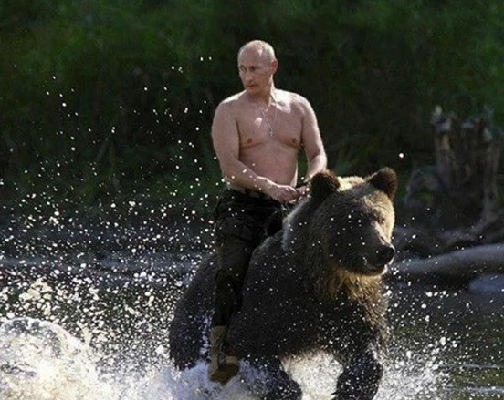

https://www.dogdrip.net/727046908
위에 우크라이나 혐한 관련해서 게시글 보고 느낀건데...
가만히 생각해 보니깐 한러관계 찾아보면 이새끼들 이랑 우리랑 관계가 은근 존나 웃김.
한국은 미국의 핵심 동맹국이고
러시아는 미국이랑 수십 년째 으르렁거리는 나라인데
이상하게 한국하고 러시아 사이에는
중간중간 이해 안 되는 이벤트가 존나 많음.
1. 일단 서로 국민감정이 생각보다 별로 안 나쁨
한국인이 일본, 중국 이야기할 때처럼
러시아 이야기한다고 갑자기 혈압 오르는 경우가 별로 없음.
러시아 쪽에서도 한국을 딱히 역사적 원수 취급하는 것도 아니고
냉전 때는 분명 적대 진영이었는데
정작 냉전 끝나고 나니까
"어? 너네랑 우리랑 딱히 직접 싸운 것도 없는데?"
하면서 관계가 존나 빨리 가까워짐.
2. 소련 망하기 직전에 한국이 돈을 빌려줌
1990년 한소수교하면서
한국이 소련한테 대규모 경협차관을 제공함.
근데 얼마 안 가서
소련 : 나 망함 ㅅㄱ
하고 진짜 나라가 없어져버림.
한국 입장에서는
"아니 시발 내 돈은?"
이 되는 상황.
결국 러시아가 소련의 빚을 승계함.
당시 한국이 구소련에 제공한 경협차관 가운데 약 14억7천만 달러가 상환 문제로 남았고, 이후 일부를 러시아제 무기와 원자재로 받기로 함.
3. 돈 없다고 배째는 대신 무기로 갚기 시작함
러시아 : "현금이 없는데..."
한국 : "그럼 어떻게 할 건데?"
러시아 : "우리 집에 탱크 있는데 가져갈래?"
그래서 시작된 게 그 유명한
불곰사업
ㅋㅋㅋㅋㅋㅋㅋㅋㅋㅋ
근데 여기서 존나 웃긴 게
빚 대신 준답시고 창고에서 AK 몇 자루 주워온 게 아니라
T-80U 전차
BMP-3 장갑차
메티스-M 대전차미사일
이글라 지대공미사일
이런 걸 줌.
1996년 1차 도입분만 약 1억5천만 달러 상당이었다.
한국군 : "어... 잠깐만
이거 북한군이 쓰는 소련식 무기 계보 아니냐?"
덕분에 한국은 돈도 일부 돌려받고
소련 계열 최신급 장비를
직접 타보고
쏴보고
뜯어보고
정비해보고
별걸 다 해봄.
그리고 T-80U, BMP-3는 연구소에 박제한 것도 아니고
진짜 한국군이 편제해서 굴림.
대한민국 육군 부대에서
미국제 K1 전차 옆에 러시아 T-80이 굴러다니는
이상한 세계관이 완성됨.
4. 근데 이새끼들이 더 웃긴 게 우주개발에서도 나타남
한국 : "우리도 위성 직접 쏘고 싶은데 발사체 기술 좀..."
미국 포함 서방 : "그건 좀..."
왜냐하면 우주발사체 기술이라는 게
조금만 옆으로 가면 장거리 미사일 기술이랑 겹침.
그래서 아무 나라나 기술 안 줌.
그런데 러시아가 나타남.
러시아 : "우리랑 할래?"
한국 : "...니들이?"
그래서 만들어진 게
나로호 KSLV-I
그리고 나로호 1단 액체로켓은 러시아가 담당함.
한국이 2단을 만들고
전체 시스템 설계는 한러가 같이 진행했으며
한국 기술진이 러시아 측 설계·제작·시험 과정에도 참여함.
5. 생각해보면 상황이 존나 기묘함
한국 : 미국과 상호방위조약 맺은 군사동맹국
그런데
한국 최초 우주발사체: 러시아 로켓 1단 장착
ㅋㅋㅋㅋㅋㅋㅋㅋㅋㅋ
미국이 보면 "너 뭐하냐?" 싶을 조합임.
심지어 러시아는 당시 발사체 선진국 가운데
한국과 협력 의사를 보인 사실상 유일한 나라였다고 항우연도 설명함.
6. 그리고 전설처럼 돌아다니는 썰도 있음
나로호 개발 당시
러시아 기술자들이 한국 기술진에게
보여주면 안 되는 자료까지 보여줬다느니
러시아 기술자가 보드카 쳐 마시고
컴퓨터에서 기밀자료 삭제하는 걸 깜빡했다느니
그래서 한국 기술진이
"어...? 이걸 봐도 되는 건가?"
하면서 열심히 봤다는 썰이 있음.
이건 공식 확인된 사실이라기보다 우주개발판 도시전설에 가까움.
근데
'러시아 + 로켓 엔지니어 + 보드카 + 보안사고'
조합이 너무 자연스러워서
사람들이 그냥 믿어버림 ㅋㅋㅋ
7. 근데 결과적으로 한국은 존나 많이 배움
나로호 자체는
1차 실패
2차 실패
하고
3차인 2013년에 성공함.
그 과정에서 한국이
발사체 시스템 설계
조립
시험
발사대 구축
발사 운용
비행 데이터 분석
이런 걸 처음부터 끝까지 직접 경험함.
항우연도 나로호 사업을
한국형발사체 독자개발의 중요한 디딤돌이었다고 평가함.
그리고 그 다음 나온 게
누리호.
이건 한국이 국내 기술로 개발함.
즉
러시아 : "일단 옆에서 한번 봐라."
한국 : "ㅇㅇ"
몇 년 후
한국 : "이제 우리끼리 만들어봄."
러시아 : "...진짜 만들었네?"
8. 정보기관끼리도 관계가 존나 이상함
여기까지 보면
"아 한국하고 러시아 존나 친했네?" 싶은데
또 뒤에서는 서로 스파이짓함.
1998년 러시아는
주러 한국대사관 조성우 참사관을 스파이 활동 혐의로 추방함.
러시아 FSB는 조 참사관과 접촉한 러시아 외무부 아주1부국장까지 체포해서 국가반역죄로 기소함.
그러자 한국도
"그래? 그럼 너도 나가."
하고 주한 러시아대사관 참사관을 맞추방함.
그러니까 관계를 요약하면
낮에는
"형제여 경제협력 합시다."
밤에는
"저새끼 외무부 간부 포섭해." ㅋㅋㅋㅋㅋㅋㅋㅋㅋ
9. 그래서 한러관계가 재밌는 게 이거임
미국처럼 동맹도 아님.
중국처럼 최대 교역국도 아님.
일본처럼 역사적으로 얽힌 것도 아님.
그런데 중요한 순간마다 러시아가 갑자기 튀어나옴.
한국 : "탱크 필요한데..."
러시아 : "우리꺼 가져가."
한국 : "대전차미사일도?"
러시아 : "가져가."
한국 : "위성도 직접 쏴보고 싶은데..."
러시아 : "로켓 가져와."
한국 : "이거 배워도 됨?"
러시아 : "계약서 범위까지만."
한국 : "ㅇㅋ"
러시아 엔지니어 : "어제 보드카 먹어서 파일 삭제하는 거 까먹음."
한국 연구원 : "????????"
그리고 제일 재밌는 건
한국 입장에서는 러시아가
분명 미국의 적성국에 가까운 나라인데
현대 한국의 군사기술 및 우주개발 역사에서
러시아의 흔적이 생각보다 존나 많다는 거임.
K1 옆에서 T-80 굴려보고
BMP-3 타보고
메티스 쏴보고
이글라 만져보고
러시아 로켓 붙여서 위성도 쏴봄.
-요약-
한국과 러시아는
서로 동맹도 아니고
서로를 딱히 믿는 것도 아니고
뒤에서는 서로 스파이 잡아다 추방하면서
이상하게 필요할 때마다
"야 너 그거 하나만 좀 알려줘봐."
"ㅇㅇ 대신 돈 줘."
하면서 굵직한 걸 주고받았던
존나 기묘한 관계였음.
북한하고 어떻게 통일만 되면 10년 안에 러시아 몽골 기차로 다 이어버리고 이상한 삼국동맹으로 주위 개판날꺼 같으니 러시아하고 못만나게 하겟지